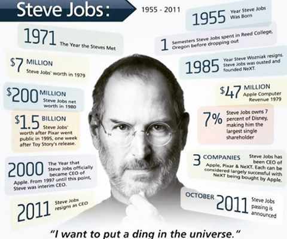

"The people who are crazy enough to think they can change the world are the ones who do." - Apple's "Think Different commercial, 1997
One of the last times I saw him, after I had finished writing most of the book, I asked him again about his tendency to be rough on people. "Look at the results," he replied. "These are all smart people I work with, and any of them could get a top job at another place if they were truly feeling brutalized. But they don't." Then he paused for a few moments and said, almost wistfully, "And we got some amazing things done." Indeed, he and Apple had had a string of hits over the past dozen years that was greater than that of any other innovative company in modern times: iMac, iPod, iPod nano, iTunes Store, Apple Stores, MacBook, iPhone, iPad, App Store, OS X Lion-not to mention every Pixar film. And as he battled his final illness, Jobs was surrounded by an intensely loyal cadre of colleagues who had been inspired by him for years and a very loving wife, sister, and four children.
